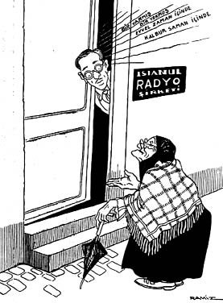

Gazetelerden: Radyo ile masallar söylenmeğe başladı...
 – Bir şey mi istiyorsunuz valde hanım?.. – Evet oğlum... Masal söylemeğe geldim!.. (İstanbul Radyo Şirketi Müdürü Mes’ut Cemil Tel), Akbaba, 1934, S. 8